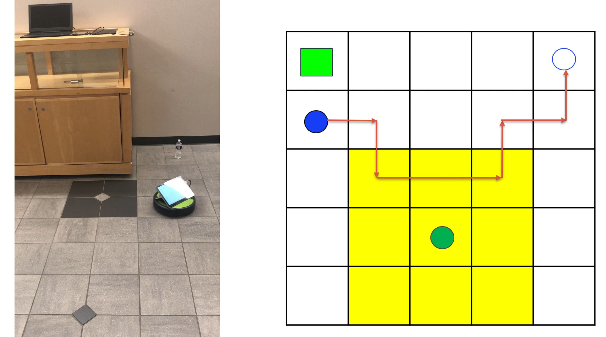
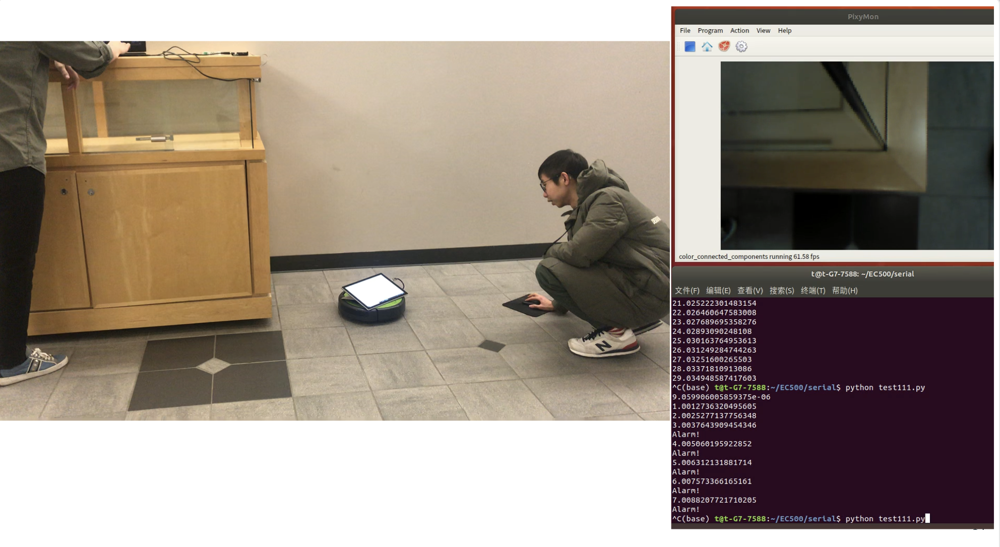

Physical Masquerade Attack Detection
Overview
In this project, we looked into physical masquerade attacks, where a compromised robot can disguise as a good robot and gain access to restricted zones. In the context of attack proof multi-agent path finding (APMAPF) problem, it is about a robot deviating from its predefined path and reaches a restricted “safe zone” without being noticed.
 
We studied a potential solution to prevent physical masquerade attacks with an attack-proof pathing
finding algorithm proposed by Kacper, implemented it on a two agent system consisting of one iRobot and
one fixed Pixy2 camera. In addition, we also realized the dynamic path planning function, which allows the
iRobot to detect unknown obstacles, recalculate and execute new path automatically.
Detailed report can be found here.